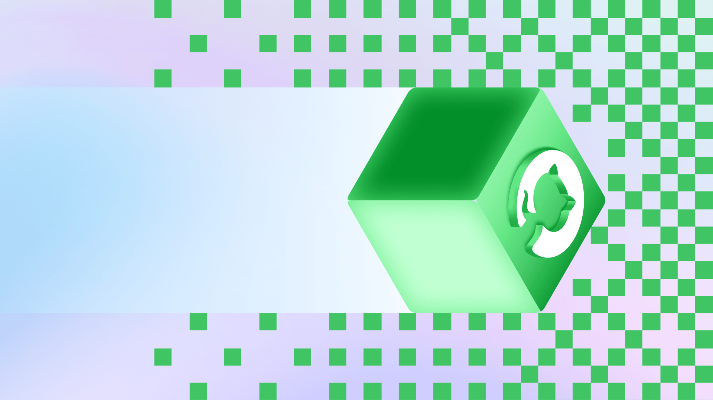
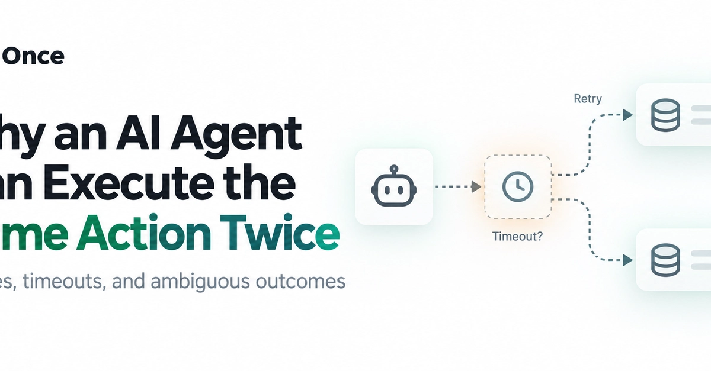
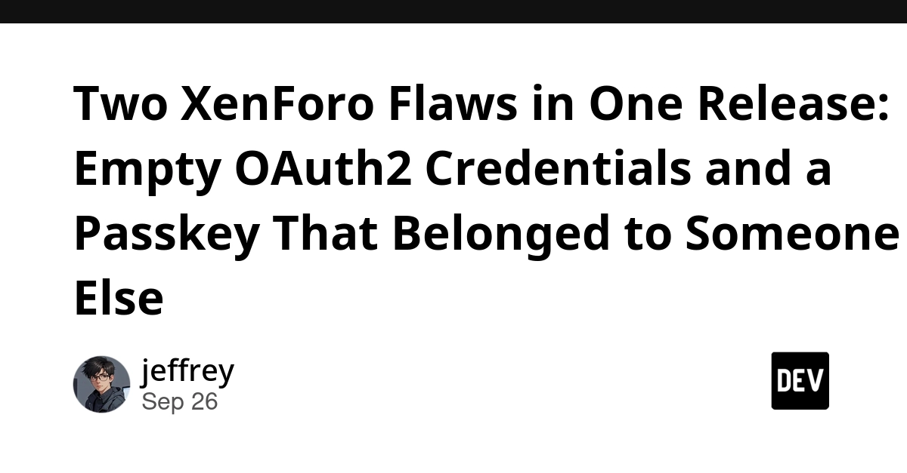
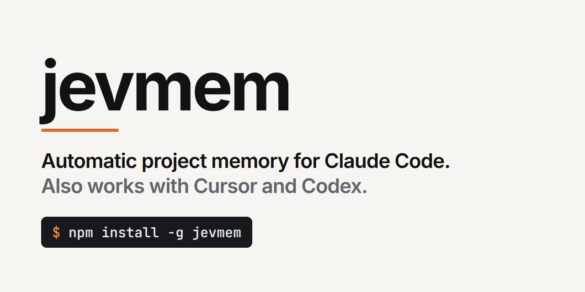
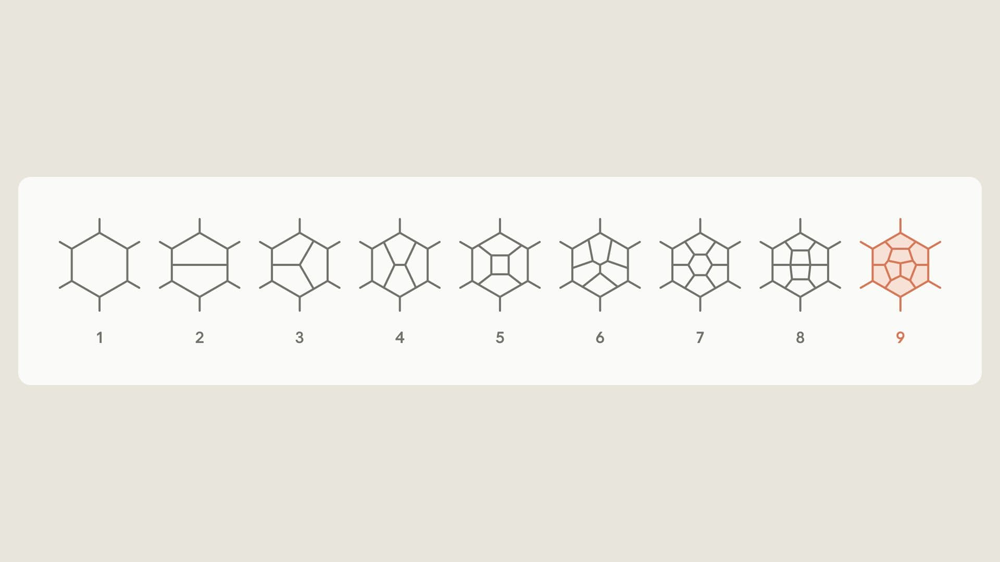
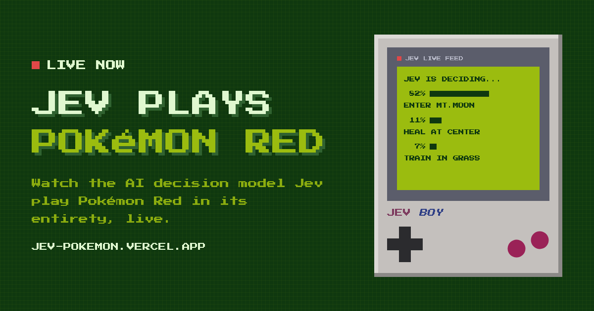
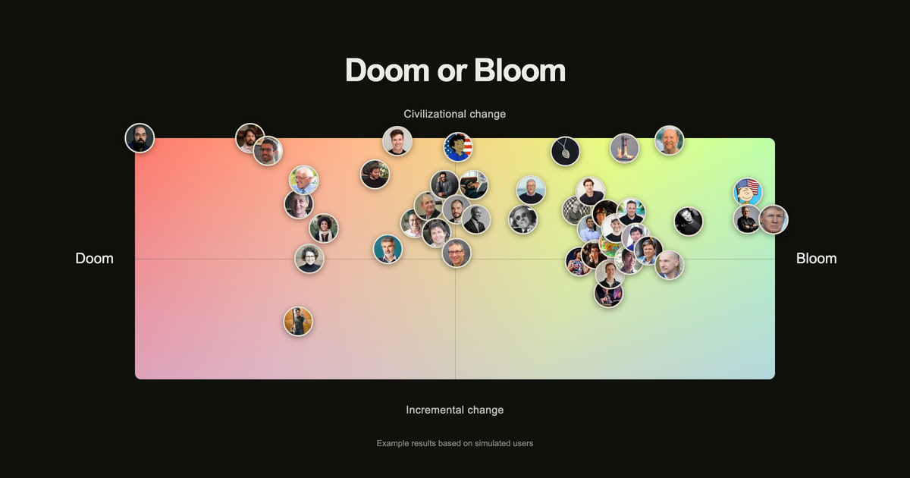
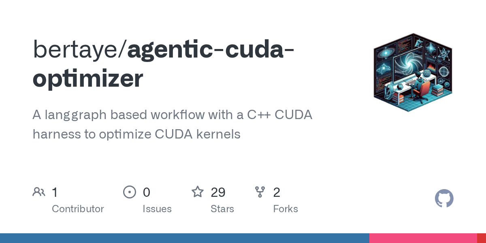

🔥 Top 3 (must read)
Critical Next.js RCE, AWS Elastic Beanstalk on EKS, CrowdSec supply-chain breach (Ship It Weekly)
A critical Next.js bug in
ImageResponse can lead to remote code execution through attacker-controlled SVG data. The same episode covers AWS Elastic Beanstalk Cluster Mode (many apps on shared EKS, AWS handles most of the Kubernetes work) and a CrowdSec breach where a stolen OAuth token let attackers copy about 170 private repos. Why it matters: If any of your web apps use Next.js, check the version and patch now. The Beanstalk-on-EKS change is also a useful option for teams that want Kubernetes without running it themselves.R
Improving site performance by shipping more CSS (GitHub)
GitHub explains how they fully moved github.com away from CSS-in-JS. Shipping plain CSS made the site faster, even though it means sending more CSS bytes. Why it matters: A large React codebase moving off CSS-in-JS is a strong signal for your own TypeScript/React frontends. Good input for any styling-architecture decision your team is facing.

Why an AI Agent Can Execute the Same Action Twice
Agents now send messages, issue refunds, and trigger deploys. A tool call can succeed but still look like a failure to the agent, so the agent retries and the action runs twice. Why it matters: This is the classic distributed-systems idempotency problem, but agent loops make it very easy to trigger. Any tool you expose to an agent needs idempotency keys or a safe retry design.

🛠 Tools & releases
Android Paging 3 Failure Matrix
A happy-path scroll is not enough. The post lays out a checklist of failure and recovery states (refresh fails, partial success) to test in paged lists. The idea transfers to Flutter list paging too.

Two XenForo Flaws in One Release: Empty OAuth2 Credentials and a Passkey That Belonged to Someone Else
Two auth bugs with one root cause: the code checked that a value was present, not that it was correct or owned by the user. A short case study for anyone maintaining a login path.

🤖 AI for developers
GitHub Copilot app for Beginners: How to build custom workflows with canvases
Describe the interface you need in plain English and the agent builds a live "canvas" you can use and update. A new way to make small internal tools without writing them by hand.
Jevmem – automatic project memory for Claude Code
(HN discussion) — Gives Claude Code memory of your project across sessions, without you managing notes by hand. 40 comments on HN, worth reading the trade-offs people raise.

Yes, Claude can do nine loops (Anthropic research)
New Anthropic research post on Claude handling long, multi-step loops. Relevant if you run long agent tasks.

John Gruber on Meta's Muse (via Simon Willison)
Meta's Muse gives each user their own persistent Linux VM in the cloud, packaged as a consumer app. Gruber calls it the first consumer-accessible agentic AI system. A sign of where agent products are going.
S
👔 Engineering & teams
Improving site performance by shipping more CSS (GitHub)
Also a good story about how a large team plans and finishes a full migration on a live site.
Why an AI Agent Can Execute the Same Action Twice
Worth sharing with your team before you give any agent write access to production tools.
🎯 For me
Ship It Weekly
Next.js RCE () — Direct hit for your web stack. Patch check today.
R
post
GitHub drops CSS-in-JS () — Direct input for React styling decisions.
post
Failure-state test matrix for paged lists () — The checklist idea fits your automation-testing interest. Turn it into Maestro or Playwright cases for your own list screens.
post
Copilot canvases () — EM angle: a cheap way for non-engineers on your team to build their own small workflow tools.
💡 App ideas & indie builds
Show HN: Jev Plays Pokémon Red
(discussion) — A live site where an AI agent plays Pokémon Red. The user problem is entertainment plus a public demo of what an agent can do over a long game. Inspiration: a "watch the agent work" page is a strong marketing format for any agent product.

Show HN: Doom or Bloom, map your AI worldview
(discussion) — A short quiz that places your view on AI on a map and lets you compare with others. Solves "I have opinions but no way to see where I sit". Inspiration: simple quiz-plus-map apps are cheap to build and spread well on social media.

Show HN: Avoid smooth spinners, use low-FPS spinners
(discussion) — Argues a spinner that updates a few times per second lets the user see if the app is frozen. A smooth 60 FPS spinner hides a hung app. Inspiration: a tiny UX detail that improves trust in any loading state, including Flutter apps.
N
Show HN: Agentic CUDA Kernel Optimizer
(discussion) — An agent loop that rewrites and benchmarks GPU kernels until they get faster. Inspiration: the "agent + measure + retry" loop pattern applies to many other things, like bundle size or test flakiness.
